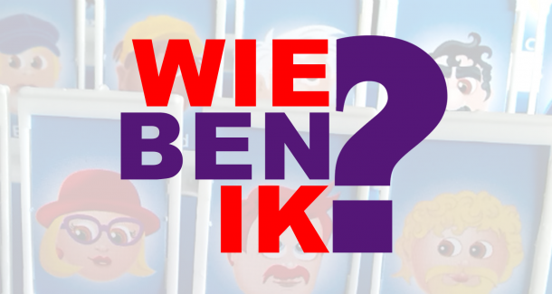

Over Mij
Ik ben Mehmet, 20 jaar en ik volg de opleiding Applicatieontwikkelaar.
Mijn hobby's zijn muziek luisteren, uitgaan, films kijken, gamen en voetbal kijken.
In deze opdracht zal ik vertellen over mijn opleidingen, ontwikkelingen en mijn personalia.
